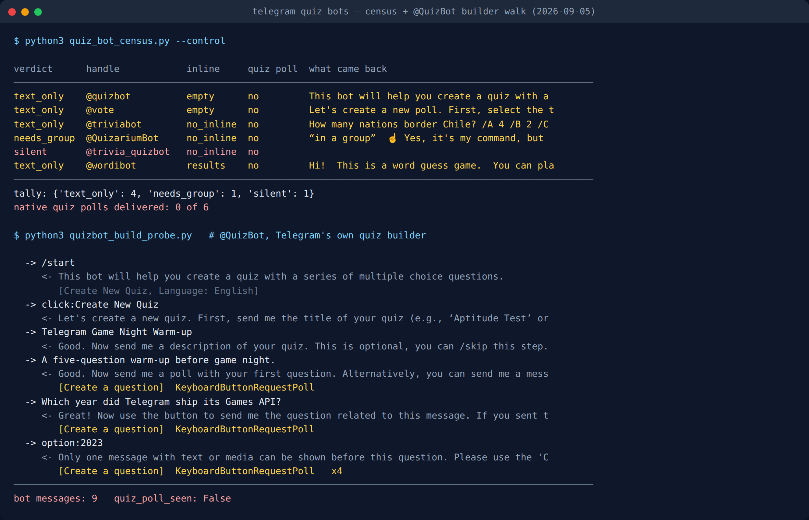

Telegram Quiz Game: 6 Bots Tested, 0 Send a Real Quiz
There is a question every “best Telegram quiz bot” list skips, and it is the only one that decides whether your evening works: where does the quiz actually happen, and who gets to answer it?
Because there is a version where six friends tap answers into the group chat and the bar fills up in front of everyone, and there is a version where one person plays alone on their phone while five people watch. Both are called a Telegram quiz game. Both appear in the same list, described in the same sentence.
So on 5 September 2026 I sent /start to six bots the lists recommend and read what came back. Not their bios: the actual message objects. Not one of them delivered a real quiz. Two are builders that interview you first, one fires plain text with slash-commands, one refuses to work outside a group, one never answered at all, and one turned out not to be a quiz bot in the first place.
The interesting part is what that adds up to. The thing everyone is looking for, the quiz that plays inside the chat, is not something a bot hands you. It is something you make, and every bot in the list is a wrapper around asking you to make it.
The four things “quiz bot” can mean
Before counting anything, the categories have to be separable by something a machine can read:
- Native quiz poll. A
MessageMediaPollobject withquizset true. It renders inside the chat: everyone taps an answer in place, the bar fills for the room, and the correct answer plus an optional explanation live in the object itself. Telegram shipped this with Polls 2.0 on 23 January 2020. This is the only mechanism where a group plays the same question at the same moment. - In-chat text round. The bot posts the question as ordinary text and watches for replies. The group can play together, but there is no answer object. Scoring is the bot’s word for it, and the questions scroll away like any other message.
- Mini App. One person opens a separate application inside Telegram. Everyone else sees a button. This is where most surviving game bots went.
- Builder. The bot does not run a quiz at all. It interviews you in a private chat, assembles a quiz from questions you write, and hands you a link to share later.
Those four are invisible in a screenshot and invisible in every listicle. They are trivially visible in the objects Telegram returns.
How I counted it
Two passes per handle, both recording what came back rather than what the bot claims.
Pass A — inline. Fire an empty inline query. If the results carry a web_app button or a startapp= link, the bot’s answer to “play” is an app. An error saying inline mode is off is a real verdict, not a failure.
Pass B — /start in a private chat. Then classify the reply objects. A poll with quiz true is a native quiz poll. A poll without it is just a poll. A web-view button is a Mini App. Text only gets disambiguated by whether the bot says it needs a group, and when it does I record the phrase verbatim rather than paraphrasing it.
Anything unreadable is recorded as blind with the exception named, never folded into “no quiz”. “Found nothing” and “could not look” are identical in a total and opposite in meaning.

quiz_poll_seen: False.What each bot actually did
| Bot | What it sent back | Who can play |
|---|---|---|
| @QuizBot | Builder. “This bot will help you create a quiz with a series of multiple choice questions.” | You, alone, writing questions |
| @vote | Builder. “Let’s create a new poll. First, select the type of poll.” | You, alone, writing questions |
| @triviabot | A question, instantly, as plain text: “How many nations border Chile? /A 4 /B 2 /C 5 /D 3” | Anyone in the chat, by typing a command |
| @QuizariumBot | A refusal: “Yes, it’s my command, but you can use it only within a group chat.” | A group, and only a group |
| @trivia_quizbot | Nothing. Resolved fine, never replied. | Nobody |
| @wordibot | “This is a word guess game” — not a quiz bot at all | Two players, in any chat |
Native quiz polls delivered: zero out of six.
The most useful row is @triviabot, and it is useful in a way its listing does not tell you. It does not wait to be added anywhere. Send it /start in a private chat and it has already asked you something, with the four options rendered as /A, /B, /C, /D commands. That is a real in-chat round with a real question, but as plain text, which means no tap-to-answer, no visible bar, and nothing stopping the fastest reader from shouting the answer before anyone else has finished reading.
@QuizariumBot is the honest opposite. It will not entertain you in a private chat at all, and its refusal spells out why: “If you want to play alone, you still should create a group.” That is a bot with an opinion about how it should be used, and for a group quiz night the opinion is the right one. It matches what I found when I checked which bots survive with only two players. Quizarium was already in the group-only column there.
The official quiz bot does not build the quiz. You do.
@QuizBot is Telegram’s own, named in Telegram’s own Polls 2.0 announcement. If any bot in the set hands you a quiz, it should be this one. So I walked its whole creation flow with a script that sends the next input and records whatever comes back, rather than following a remembered path.
Nine bot messages later, here is where it stops. Title: accepted. Description: accepted. Then:
Good. Now send me a poll with your first question. Alternatively, you can send me a message with text or media that will be shown before this question.
Warning: this bot can’t create anonymous polls. Users in groups will see votes from other members.
I sent the question as text, the way you would type it to a person. It said “Great! Now use the button to send me the question related to this message”. My text had been filed as a preamble, not a question. I sent the four answer options next. Each one came back with the same sentence, four times:
Only one message with text or media can be shown before this question. Please use the ‘Create a question’ button to send me the quiz question in the form of a poll.
That button is worth naming precisely, because it is the punchline. Its type is KeyboardButtonRequestPoll, a button that does not send anything to the bot at all. It asks your Telegram app to open its native poll composer so you can build a quiz poll, which your app then hands over.
So the official quiz bot cannot be talked to in words. It requires the native quiz poll as its input. Every route through the ecosystem ends at the same object, and the bots are packaging around it.
Want a game night that needs no bot at all?
The Telegram Party Pack is 255 group-chat game prompts that run on nothing but the chat you already have — no bot to add, no app to open, nothing that can go silent next spring.
Get the pack — $9.99 Or start with the free party games list.How to run a real quiz tonight, in about a minute
Given all of the above, the fastest route to a quiz your whole group can play is the one with no bot in it:
- Open the group chat. Tap the paperclip / attachment icon.
- Choose Poll, then switch the poll type to Quiz.
- Type the question and the options, and tap the one that is correct.
- Optionally add an explanation — it appears after someone answers, which is where the “actually, here’s why” goes.
- Send. Everyone taps in the chat, and a correct answer gets confetti.
Repeat for as many questions as you want. If you would rather have a numbered quiz with a score at the end, that is exactly what @QuizBot assembles. You will just be composing each question as a poll anyway, so start there and let the bot staple them together.
Two limits worth knowing before you plan a long evening. Answers through @QuizBot are not anonymous in a group, by its own warning above. And the poll object itself has hard ceilings. I measured what breaks a quiz night earlier this year: the caps on options, question length and explanation text are exact, and the explanation cap is the one people hit first. The Bot API reference for sendPoll lists the same numbers if you are building this programmatically.
What I could not measure
Four boundaries, stated because a result without them is half a result.
I only sent /start. A bot that greets you with text may well fire quiz polls later, after a command I did not send. What the census shows is what a new user gets on contact, the moment most people decide whether a bot works, not the bot’s full repertoire.
Every probe ran in a private chat. That is precisely why @QuizariumBot reads as a refusal: in a group it would have played. I did not add six bots to a live group, so “who can play” in the table is read from what each bot says and does in a DM, not from six group sessions.
@trivia_quizbot’s silence is a six-second silence. It resolved as a real account and did not answer within the window. That is a finding about a six-second wait, not a death certificate.
I could not mint a quiz poll from my own client to sit in the table as a control. My library version serialises the “correct answer” field against an older schema and the request dies before it leaves the machine. With integers instead it reaches Telegram and gets rejected as “not an existing answer”. Which is its own small confirmation of the thesis: the quiz poll is a client-composed object first and an API object second. The evidence that it is the atom of this system is @QuizBot demanding one, not one I produced.
What this tells you
“Telegram quiz bot” is a category that mostly does not contain what its name promises. Of six, one plays a text round anywhere, one plays properly but only in a group, two are form-fillers, one is silent, and one is a word game that wandered into the list. The object everybody actually wants ships with Telegram, sits behind the paperclip icon, and takes under a minute to use.
This is the same shape of answer I keep getting from this corner of Telegram. When I messaged eighteen recommended game bots, seven were already dead. When I checked Telegram’s own decade-old games platform, it worked perfectly and had exactly one user. The bots churn; the built-in mechanisms quietly keep working.
So the practical rule holds for quizzes too: before you plan an evening around a bot somebody recommended in an article, spend fifteen seconds sending it /start yourself. In every pass I have run, the article is older than the bot’s last working day, and in this one, the feature you wanted was never in the bot to begin with.